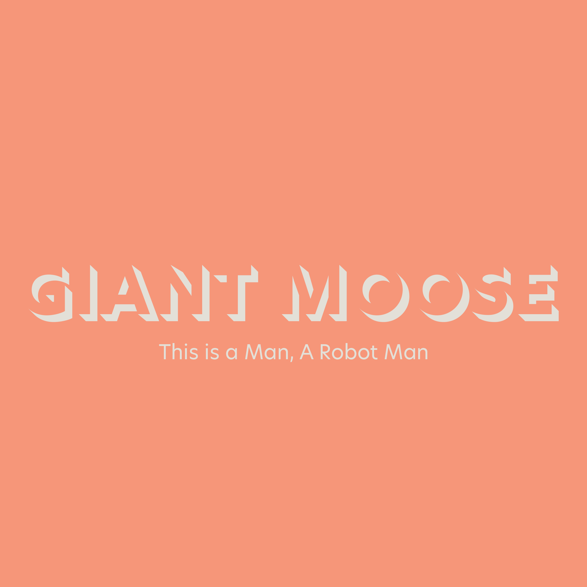
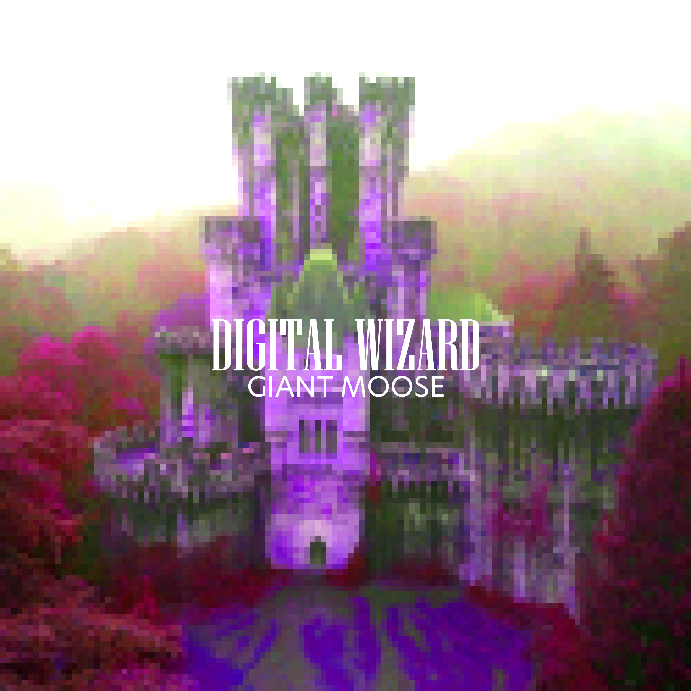

Giant Moose's first EP was inspired by one the greatest movies of all time, "Terminator 2". They recorded this EP in some guy's basment. That guy may have been Fred Durst. No one is entirely sure becuase he never spoke or looked people in the eye. Six months after finishind the EP, that guy disappeared. Anyway, "This is a Man, A Robot Man" sold over 40,000 copies in less than month. It's regarded as some of the best work they've ever created. Beautiful from start to finish. The EP released in September of 2011
"Heavy Hitter with Large Antlers and a Gun" is the first album recorded after signing with Blab Blah Records. This album took 2 years of tireless, nonstop innovation and writing. The band spent days, weeks living inside the studio. During the writing of this album is when Third-eye got his name. After not sleeping for a week, he began to halucinate and have visions. He predicted the Pandemic of 2020. No one listened. They all should have listened to Third-eye. The album was released in December of 2013
What can truly be said about "Digital Wizard"? A concept album beyond almost all human understanding and knowledge. It's said that Mars Marson took a lot of "spiritual awakening medications" to acheive what has been written. Mars also spent 6 months living in a bathtub in France with a man whose name has never been revealed. "Digital Wizard" takes you on a journey beyond time and our earthly realm. Embark into the void and see if you return. "Digital Wizard will release in October of 2021.
